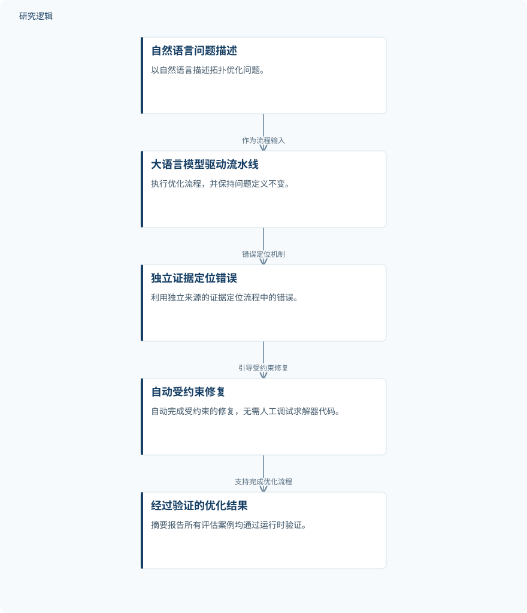

摘要解读
Agent4FreeFem：验证引导的自主拓扑优化框架
Agent4FreeFem: A Verification-Guided Framework for Autonomous Topology Optimization
解读更新 2026-11-10 10:10 · 依据公开摘要整理，未核验全文细节
拓扑优化的难点不只在求解，也在于如何把问题描述可靠地转成可运行、可核验的优化流程。Agent4FreeFem尝试用大语言模型贯通这一过程，其阅读价值在于关注自动化执行背后的错误定位与受约束修复。
文章目录
从问题描述到优化结果，仍有人工衔接
拓扑优化已用于航空航天、汽车和机械工程，但面对新问题，从描述走到优化结果仍然缓慢且依赖专家。摘要指出，流程包含多个需要人工连接的阶段，求解器代码往往需要重新编写和调试，还可能运行失败或给出错误结果。本文针对的是这条工作流的自动化与可靠性问题。
保持问题定义不变，以独立证据引导修复
Agent4FreeFem是一条由大语言模型驱动的流水线，将自然语言问题描述转化为经过验证的优化结果，不需要人工开发或调试求解器代码。摘要明确列出的机制包括：保持问题定义不变，利用独立来源的证据定位错误，并自动完成受约束的修复。
这些机制共同服务于端到端自动化、自主执行和结果可核验。这里值得区分的是，自动修复并不意味着可以任意改写任务；按照摘要的表述，原始问题定义应在这一过程中保持不变。
依据摘要整理的验证引导优化流程


概括摘要明确陈述的输入、错误定位、受约束修复与输出关系，不代表论文原图，也不补充具体阶段配置。
下载 SVG图示关系说明
实线表示相邻阶段的信息流，虚线表示跨阶段联系或反馈。
自然语言问题描述 → 大语言模型驱动流水线：作为流程输入；大语言模型驱动流水线 → 独立证据定位错误：错误定位机制；独立证据定位错误 → 自动受约束修复：引导受约束修复；自动受约束修复 → 经过验证的优化结果：支持完成优化流程
所评估案例均通过运行时验证
作者在一组单物理场与耦合多物理场问题上评估了Agent4FreeFem。摘要报告，所有案例都通过了运行时验证，并在各阶段的修复预算内完成。这是摘要提供的主要结果，直接涉及所评估案例的执行与验证情况，但不应延伸为对任意拓扑优化问题都适用的保证。
验证标准与比较范围仍需进一步阅读
仅凭摘要，无法判断案例数量、具体物理问题、问题复杂度和代表性，也无法获知比较基线、耗时、计算开销或人工投入的定量变化。摘要同样未给出各阶段修复预算的具体设置，因此不能据此量化效率提升。
运行时验证检查哪些条件、独立证据来自何处，以及验证是否覆盖优化解的精度、最优性和物理正确性，摘要均未展开。这些是当前资料的判断边界，不意味着论文没有开展相应检查或比较。
阅读启发：关注修复边界，而不只看代码生成
阅读启发：对结构生成式设计中的大模型工具，可重点追问其如何在修复错误时维持问题定义，以及验证证据如何约束自动执行。进一步阅读本文时，值得关注运行时验证的具体判据、修复允许改变的内容，以及单物理场与耦合多物理场案例的覆盖范围；这些信息有助于判断该框架的适用边界。
以上为本站阅读启发与建议，不是论文已验证的结论。